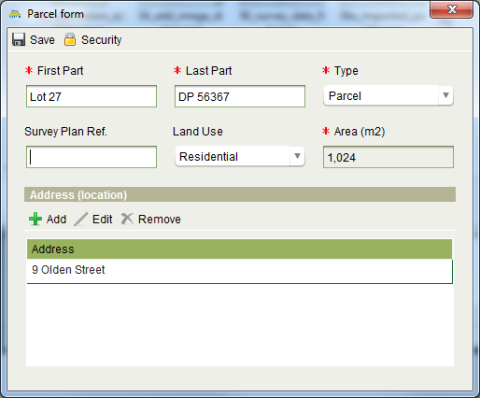

Convert a Paper Title
The Convert to Digital Title service can be used to convert a paper title into its digital
equivalent in Registry. The need to use this service may be triggered by the lodgement of an
instrument over a property that is not yet recorded in Registry.
Steps
-
-
Create a new application with the Convert to Digital Title service.
-
Important: Note the title reference (i.e. First Part and Last Part) for
the title to be converted on the Property tab of Application Details and click the Add
property button. This will be used as the title reference for the new property record
in Registry. If you omit a title reference here you will not be able to
 Start the Convert to Digital Title service.
Start the Convert to Digital Title service.
-
Add a Miscellaneous document to the application that describes why the title is being
converted into Registry.
-
Scan the paper title and attach this to a Title document on the application.
-
Lodge the new application. You do not need to print the lodgement notice.
-
Open the application and check the Fee paid flag on the Fees tab. If you do not have
permission to check this flag, arrange for your team leader to check it on your behalf.
-
Assign the application with the Convert to Digital Title service to yourself.
-
Open the assigned application and start the Covert to Digital Title service.
-
Registry will open the Property Details screen with the title reference for the new
property already set. Verify this matches the paper title. If the title reference is
not correct, close the Property Details screen without saving and update the property
details on the Property tab of the Application Details screen and try to Start the service again.
-
On the General tab, click
 Link
paper title and link the Title document containing the scanned image of the paper title
to the property.
Link
paper title and link the Title document containing the scanned image of the paper title
to the property.
-
Set the Area as noted on the paper title. If no area is recorded, leave the Area field
blank.
-
On the Parcels tab, you can add a new parcel, select a parcel that is already
associated to the application or search for an existing parcel.
-
In most cases the parcel for the Property should already existing in Registry. Use
 Search to locate the parcel using
its appellation (i.e. Lot and Plan number). When you have found the appropriate
parcel,
Search to locate the parcel using
its appellation (i.e. Lot and Plan number). When you have found the appropriate
parcel,  Select it
Select it
-
If the parcel is already associated to the application, click
 Add from Application and Select the appropriate parcel from the Parcels
dialog.
Add from Application and Select the appropriate parcel from the Parcels
dialog.
-
If the parcel is new, click
 New and
enter the relevant details for the parcel into the Parcel form.
New and
enter the relevant details for the parcel into the Parcel form.  Save the details to return to the Property Details
screen.
Save the details to return to the Property Details
screen.

Add Parcel dialog
-
-
On the Rights / Restrictions tab you must add all of the current rights and
restrictions as noted on the paper title.
-
Start by creating the primary right for the property. Select the appropriate primary
right type from the Right type drop down and click
 Create.
Create.
-
Enter the details for the primary right (e.g. owner details and share information) and
set the Registration date and Notation text. You will also need toAdd a document to the primary right. Use the Title
document.
-
Add any other current rights or restrictions (i.e. mortgages, caveats, etc.) noted on
the paper title to the property by selecting the appropriate type of right/restriction
in the Right type drop down and clickingCreate.
-
Go to the Property history tab.
-
If the paper title indicates a Prior Title or Prior Folio then click theAdd tool in the Parent Properties section to launch the
Add Parent Property Wizard. Use the search to locate the appropriate prior title and
complete the wizard.
-
Make sure the Relationship Type on the Select Rights and Parcels screen is
set to Prior Title.
-
If you cannot locate the prior title using the search, then cancel the wizard as
Registry does not have a record of the prior title.
-
Note that the prior title should have a status of Historic. If it is Current, then
that indicates the prior title is live. You should investigate further to determine
if the prior title should remain live or whether it must be cancelled as part of
converting the paper title (using the Cancel Title service).
-
Save changes to Property Details andComplete the Convert to Title service.
-
Continue processing the application and any other services as required.
Also See
-
-
Overview
-
Registry Desktop Screens
-
Land Registration How To